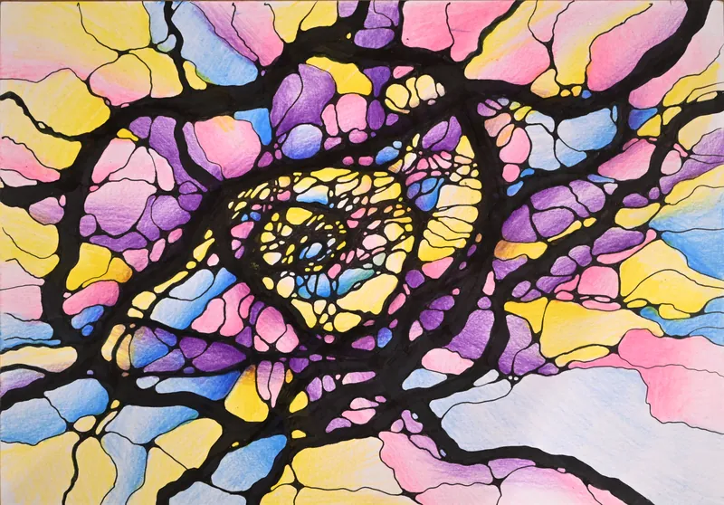
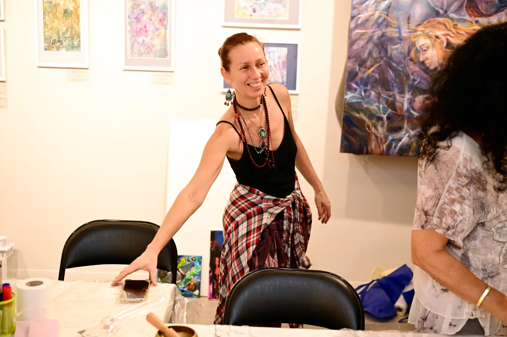

NeuroGraphica with Sandra Leifer: a free online guide, learning and sessions in Israel
NeuroGraphica (also called neurographics or neurographic art) is a drawing method created by the psychologist Pavel Piskarev in 2014. A drawing is built from free “neuro-lines”; the sharp corners where they cross are rounded, the sheet is joined into one composition and then colored. You do not need to know how to draw: what matters is attention to the line, the body and the feelings.
Book a session on WhatsAppTry it online for free
Sandra Leifer is an artist and visual-arts teacher with more than 20 years of teaching experience, and a NeuroGraphica instructor and supervisor. She lives and works in Israel.

What is NeuroGraphica
In NeuroGraphica you do not draw a “pretty picture” but your own topic or request: a task you want to solve, something you want to change, or a state you want to cope with.
The basis of the method is the neuro-line: a free line that appears where you do not expect it and never repeats itself. The lines cross, the sharp corners at the crossings are rounded, no element is left isolated, and at the end the sheet is colored in the colors that feel right.
NeuroGraphica is used as a creative practice for self-discovery, working with a personal request and calm concentration. It is not a medical treatment and not a substitute for psychotherapy.
NeuroGraphica online: try it for free
The interactive guide on Sandra’s site leads you through all the steps right in the browser: you can draw with a finger or a mouse, or take a sheet and markers and follow the instructions.
The guide works in English, Hebrew and Russian. Everything you draw and write stays on your device.
The limit-removal algorithm
The limit-removal algorithm is the basic algorithm of NeuroGraphica, and learning usually starts with it. The idea: spontaneously draw the tension around your topic, round all the sharp corners, join the elements into one composition and color the sheet, comparing how you feel before and after. Sandra’s online guide walks this path step by step.
How to draw NeuroGraphica: the steps
This is how Sandra’s guide is built. You can follow it on a sheet of paper with markers or right on your phone.
Materials
A white sheet, a black marker for the lines, a thin gel pen for rounding corners, one thick marker and a few colored markers. Metallic markers are not used.
The request
Put your topic into words: a task or a state you want to work with, and give it a short name.
20 words in 2 minutes
Write about your topic spontaneously, in a flow, without weighing every word.
Check-in
Listen to yourself: body, feelings, image, thoughts. You come back to this check-in after every stage.
Neuro-lines
Draw lines across the whole sheet, in directions your hand would not take out of habit. Line after line, until the sheet is full.
Rounding corners
Fill every sharp corner at a crossing with a small arc, so the lines flow into each other.
The rules of harmony
All corners are rounded, there are no isolated elements, everything is joined into one composition.
A figure of your choice
With the thick marker draw a figure of your own by hand, an “island”, run neuro-lines through it and join it to the composition.
Corners again
Round all the new corners that appeared around the figure.
Color
Color the spaces as you feel, and notice what changed in your body, feelings and thoughts.
Sandra’s NeuroGraphica works
Click a work to open its page.


Who leads it: Sandra Leifer
- NeuroGraphica instructor and supervisor.
- Professional artist with formal academic training in fine art: Art School No. 1 and Yaroslavl Art College.
- More than 20 years of teaching visual arts: individual lessons, group workshops and creative laboratories.
- Arts Professional of Israel, member of the Union of Professional Artists of Israel and the UNESCO Artists’ Union.
- Solo exhibition “A Fairy Tale Born from a Blot”, Tel Aviv, September 2026.
- Developing her own method of group creative self-exploration, combining movement, breathing, gesture, artistic improvisation, NeuroGraphica and philosophical reflection.
NeuroGraphica sessions with Sandra
Sandra leads individual lessons, group workshops and creative laboratories for children and adults. The format, place, language and time are agreed personally: write to Sandra on WhatsApp.


Phone and WhatsApp: +972 53-538-0014
Frequently asked questions about NeuroGraphica
What is NeuroGraphica?
NeuroGraphica (neurographics, neurographic art) is a drawing method in which free neuro-lines, rounded corners and color build a drawing around a personal request. It was created by the psychologist Pavel Piskarev in 2014.
Do I need to know how to draw?
No. NeuroGraphica needs no artistic technique: you draw simple lines and shapes, and the main thing is to notice your sensations while you work.
What do I need for a NeuroGraphica session?
A sheet of white paper, a black marker, a thin gel pen, one thick marker and a few colored markers without a metallic shine.
What is the limit-removal algorithm?
It is the basic algorithm of NeuroGraphica: a spontaneous drawing around your topic, rounding all the sharp corners, joining the elements into a composition, and coloring.
Can I practice NeuroGraphica online?
Yes. Sandra Leifer’s site has a free interactive step-by-step online guide in English, Hebrew and Russian. The format of a session with Sandra is agreed on WhatsApp.
Where can I learn NeuroGraphica in Israel?
With Sandra Leifer, a NeuroGraphica instructor and supervisor who lives and works in Israel. She leads individual lessons and group workshops. To book, write on WhatsApp: +972 53-538-0014.
How is NeuroGraphica different from ordinary drawing?
The goal is not a pretty picture but the process: a free line instead of a habitual one, rounding sharp corners, and checking in with the body, feelings and thoughts after every stage.
Is NeuroGraphica a therapy?
No. It is a creative practice for self-discovery and working with a personal request. It does not replace medical or psychological help.
Would you like to go through it with Sandra?
Write to Sandra on WhatsApp and arrange a NeuroGraphica session.